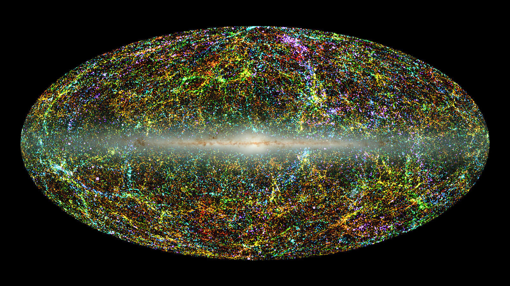

The Big Bang theory is a description of the early Universe that states that the universe began as a dense, hot, uniform soup of particles. It relies on the theory that the universe started from an infinitely dense point, known as a singularity that rapidly inflated. Overtime, these particles condensed to form elements and, much later, the first stars. Cosmic microwave background (CMB) is a prominent piece of evidence that supports the Big Bang. The cosmic microwave background is considered a shockwave of the Big Bang and is the remnant of the first light that traveled throughout the Universe freely. It’s distribution and patterns match what was expected in models. A map of the CMB can be seen on the right. Likewise, the relative abundance of light elements is consistent with the Big Bang theory which states that these elements were formed during Nucleosynthesis in the first few minutes of the Universe.

Evolution Of The Universe According To The Big Bang Theory
According to the Big Bang Theory, the Universe originally rapidly inflated from a singularity. During the first few minutes of the Universe, it was filled with a "soup" of particles at extremely high temperatures. Then, as matter and energy grew farther and farther apart, the Universe cooled. Likewise, this allowed photons to finally travel freely, resulting in light that could travel throughout the Universe. Soon, the simplest elements to form, such as hydrogen, and around 400 million years following the initial inflation, gravity caused the first stars and galaxies to develop.
What About the Origins Of the Universe?
While the Big Bang theory describes the evolution of the Universe very well, it doesn't describe how the Universe actually began. In other words, it fails to adress the origins of the Universe. Currently, the theory of cosmic inflation posits that the temperature was close to absolute zero and the Universe was only empty space filled with energy prior to the Big Bang. However, what actually triggered the expansion of the Universe remains a mystery. One theory, popular within string theory, suggests that the Universe is oscillating. This would mean that there is an endless series of "Big Bangs" and "crunches" which reset the process. This, according to the theory, occurs when higher dimensional membranes, known as "branes", collide and trigger cosmic events. Nonetheless, there is still no clear answer on what triggered cosmic inflation and how exactly the Universe began rapidly began expanding. One key reason for this is the breakdown of General Relativity and Quantum Mechanics (the two most successful physical theories) in extremities such as singularities. Some astrophysicists say that an answer to exactly how the Universe was created will only accompany a theory that can describe quantum gravity (combining both quantum mechanics and general relativity).